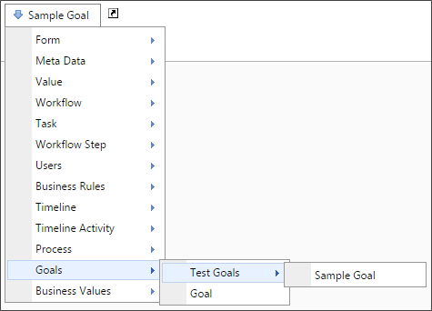

Goals that you create are added to the System Variables dropdown menu so that the Goal can be accessed in any place where system variables are used.

This system variable returns the result of a selected Goal.
{GOAL:GoalName, previous_value=1|yes|true}
The result of this system variable can be formatted according to the options available to the type of data the Business Rule returns.
previous_value: Every time a Goal is processed, both the previous value and new value are stored. Adding the previous_value parameter will return the previous Goal value instead of the current value. The previous_value parameter should always be set to 1, yes, or true, all of which are functionally the same, to return the previous Goal value. Setting the previous_value parameter to any other value will return the current value of the Goal.